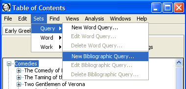
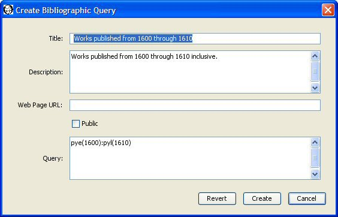
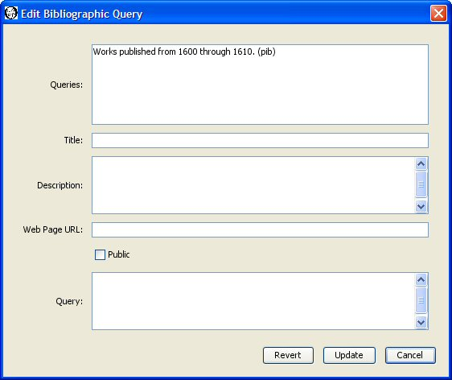
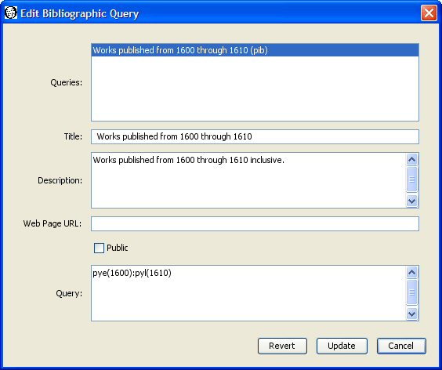
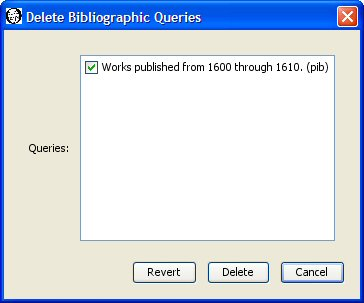

|
|
|
A saved bibliographic query allows you save a query template you can use to create work sets. For example, you may want to gather together all the works published in specific range of years. You can create a query that specifies "retrieve works published between 1600 and 1610", save that query, and use it to create work sets using different collections of source works. You specify the query using a WordHoard specific internal corpus query language.
To create, edit, or delete a saved bibliographic query you must first login so that the Sets menu becomes available. Not all installations of WordHoard allow you to login. You will not be able to create saved bibliographic queries on such systems.

Select "Sets, Query, New Bibliographic Query" to bring up the dialog for creating a bibliographic query.

You must enter a title for the saved bibliographic query. The title is a required field. Each of your saved bibliographic queries must have a distinct title. Someone else may use the same title for a query. The differing login names distinguish otherwise identically titled queries. We'll use "Works published from 1600 through 1610" as the title of our saved bibliographic query.
You may enter an optional extended description of the query.
You may enter an optional web page URL where more information about the query may be found. It is up to you to create that web page.
A saved bibliographic query may be public or private. A public query may be viewed and used by anyone. A private query may only be viewed and used by the creator, and only when the creator is logged in. Saved bibliographic queries are private by default. Select the check box before Public to make the query public.
Specify the query text. We enter pye(1600):pyl(1610) which requests works whose earliest possible publication date is 1600 and whose latest possible publication date is 1610. The syntax of the WordHoard bibliographic query language appears below.
Press the "Create" button to create the query. WordHoard will report if the creation succeeded or failed.
The general form of a bibliographic query term is:
[!]termname({text})
!means "do not match the text defined by this term." By default, the text will be matched.
termname is the term name. Example: aun means author name.
text is the term text. If enclosed in braces, it is assumed to be a regular expression. You need not enclose the term text in quotes unless the text contains blanks or special characters.
Examples:
You may combine terms to form a term set by separating individual terms by a colon (":"). In our sample query above, pye(1600):pyl(1610) contains two query terms, pye(1600) matching works published in 1600 or after, and pyl(1610) matching works published before and including 1610. The combined terms form a term set to match works published from 1600 through 1610 inclusive.
Here is a complete list of the available bibliographic query terms.
| Term name | Definition | Parameter values |
|---|---|---|
| aun | Author name | Author's full name, e.g., "William Shakespeare". |
| cot | Corpus title | The corpus title, e.g., "Shakespeare". |
| cog | The permanent corpus tag. | The corpus tag, e.g., "sha" for Shakespeare. |
| wkt | Work title. | Full work title, e.g., "Hamlet, Prince of Denmark". |
| wkst | Short work title. | Short work title, e.g., "Hamlet". |
| wpt | Work part title. | Full work part title, e.g., "Prologue". |
| wpst | Short work part title. | Short work part title, e.g., "Prologue". |
| wkg | Permanent work tag. | Work tag, e.g., "sha-ham" for Hamlet. |
| wpg | Permanent work part tag. | Work tag, e.g., "sha-ham-1-3" for Act I, Scene III of Hamlet. |
| pye | Earliest publication year. | Earliest possible publication year for work, e.g., pye(1600) specifies 1600 as the year. |
| pyl | Latest publication year. | Latest possible publication year for work, e.g., pyl(1610) specifies 1610 as the year. |
You may combine bibiographic query terms with word query terms to search for works or work parts containing specific words. For example, you can create a bibliographic search which selects works in Shakespeare containing a character named "Sir John Falstaff" by specifying the query text as cot("Shakespeare"):spk("Sir John Falstaff"). To search for "Falstaff" anywhere in the name we could a regular expression and write the query as cot("Shakespeare"):spk({.*Falstaff.*}).
You can edit bibliographic queries by selecting "Sets, Query, Edit Bibliographic Query" from the menu. The edit bibliographic query dialog appears.

The top panel of the dialog lists the bibliographic queries which you are allowed to edit. You can only edit public or private bibliographic queries which you have created. You cannot edit bibliographic queries belonging to others. Select the bibliographic query you wish to edit. The remaining fields in the dialog change to reflect the current values in the selected bibliographic query. For example, select our "Works published from 1600 through 1610" bibliographic query. The title, description, web page, public flag, and query text for that bibliographic query now appear in the dialog.

You can change the title, description, web page URL, public flag, and query text by entering new values. Press the "Update" button to save any changes you make.
You may delete one or more of the saved bibliographic queries you have created by selecting "Sets, Query, Delete Word Query" from the menu. The Delete Word Queries dialog appears with the names of your saved bibliographic queries. If you have not created any saved bibliographic queries, WordHoard displays a message to that effect instead.

Select the check box next to each bibliographic query you want to delete so that a check mark appears in the box. In the sample dialog above the only saved bibliographic query available for deletion is "Works published from 1600 through 1610". We have selected that query for deletion by toggling the check box next to it. Press the Delete button to delete the selected queries.
Please be careful. Once you delete a query, it cannot be recovered. You will need to recreate the query if you want to use it again.
|
|
|